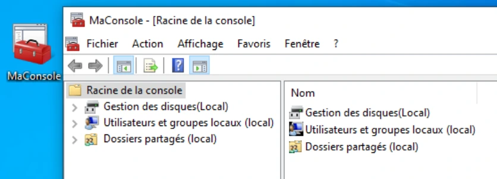

Transcription du document de formation. Les paragraphes, listes, tableaux et visuels isolés suivent l’ordre du document ; les aides pédagogiques sont séparées.
TP du Module 03 – Interagir avec Windows 10
Sur la VM Win10-XX
Faites CTRL+ALT+SUPPR dans votre VM puis changer de mot de passe
Clic droit sur les icônes du bureau > Détacher de la barre des tâches
Rechercher > PowerShell > clic droit > Epingler à la barre des tâches
Rechercher > Windows Update
Options avancées de Windows Update
Options avancées
Interrompre les mises à jour > Suspendre les mises à jour au maximum
Rechercher > Nom > Afficher le nom de votre PC
Rechercher > Nom > Afficher le nom de votre PC
Renommer ce PC
Un redémarrage est nécessaire
Après le redémarrage, vérifiez la bonne prise en compte du nouveau nom.
Démarrer > Exécuter > mmc
Fichier > Ajouter/supprimer des composants logiciels enfichables
Gestion des disques > Cet ordinateur > Ajouter
Utilisateurs et groupes locaux > l'ordinateur local > Ajouter
Dossiers partagés > l'ordinateur local > Ajouter
OK
Fichier > Enregistrer sous > Bureau > MaConsole.msc
Clic droit n’importe où sur le bureau > Personnaliser
Rechercher > Veille > Modifier les conditions de mise en veille de l'ordinateur
Ecran > jamais
Veille > jamais
Sur la VM Discovery
Ouvrir la console admConsole et observer les logiciels enfichables présents :
- Gestion de l’ordinateur
- Gestionnaires de périphériques
- Services
Rechercher > nom > Afficher le nom de votre PC
Renommer ce PC
Un redémarrage est nécessaire
Après le redémarrage, vérifiez la bonne prise en compte du nouveau nom

Rechercher > Windows Update
Options avancées de Windows Update
Options avancées
Interrompre les mises à jour > Suspendre les mises à jour au maximum